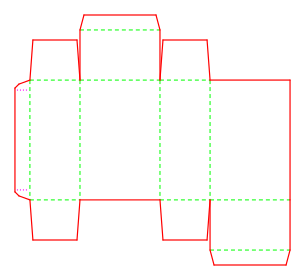
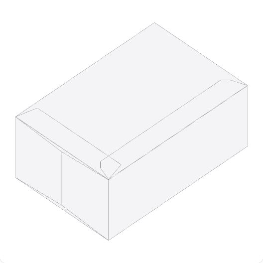
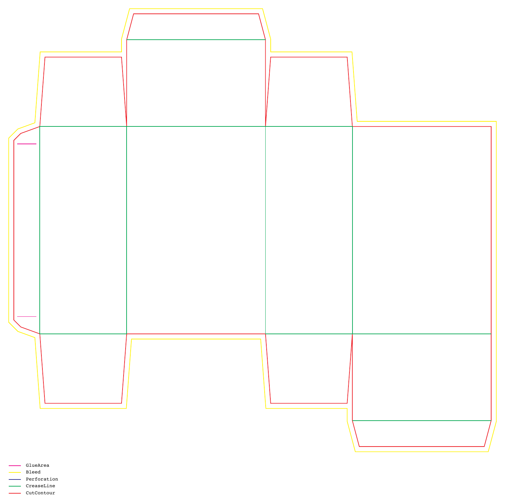

7 blanks. 4 previews.


- 25%
- PASS
- 50%
- PASS
- 75%
- PASS
- 100%
- PASS
12 shared edges
≤ 0.5 mm gap

DESIGN:OS Origami generates parametric carton dielines, printer exchange files and source-derived folding previews from Python.
Python ≥3.10 · MIT
- Carton choices
- Seven parametric styles
- Interface
- Python CLI
- Presentation
- SVG · DXF · HTML
- Printer profile
- Spot PDF · R2000 DXF
- Preview gate
- Four sampled positions
- Site
- Static · no build step
The blank is the common source.
A dieline, a printer exchange sheet and a folding view need to describe the same geometry. Start with the full blank and follow its paths through each output.
The topology tests check a single CUT contour, connectivity and slit attachment. These structural checks do not establish physical foldability.
- 1 / Dieline
Set the geometry.
Generate seven parametric carton dielines as SVG and presentation DXF.
- 2 / Printer paths
Name the handoff.
Export a printer profile with five named spots, 1 pt PDF strokes, a legend and 3 mm default bleed.
- 3 / Fold inspection
Follow the hinges.
Inspect source-derived rigid-panel motion when the sampled continuity gate permits a 3D preview.
Seven cartons.
Every blank visible.
Individual source-generated examples, with full SVGs and separate printer PDF/DXF downloads. Dimensions below describe the shown blank, not the finished carton.


These catalogue examples record their own dimensions and caliper in catalog.json; they are not a promise that every parameter combination folds. Miura-ori and deer-base are separate research patterns, outside this carton catalogue.

A handoff with named paths.
Export a printer profile with five named spots, 1 pt PDF strokes, a legend and 3 mm default bleed.
- CutContour
- Cut contour
- CreaseLine
- Crease paths
- Perforation
- Perforation paths
- Bleed
- Exterior allowance
- GlueArea
- Glue paths
Printer DXF is R2000 with millimetre units and y-up coordinates. Presentation DXF is the separate R12 drawing export; its recipient unit/orientation profile is unspecified and it loses mountain/valley direction.
The legend uses all five spots even when a particular blank has no paths of a given type. Agree the names, bleed and import settings with the recipient.
From flat paths
to moving panels.
Inspect source-derived rigid-panel motion when the sampled continuity gate permits a 3D preview. Rotate, pan and zoom the actual generated tuck viewer below; use its fold controls to inspect progress.
Rigid-panel visualization; continuity is sampled at 25%, 50%, 75% and 100%, with a 0.5 mm tolerance. The 2D drawing remains available if JavaScript, the Three.js r128 CDN or WebGL is unavailable.
Open the standalone viewerChoose the workflow
for the job.
A parameter-driven blank makes regeneration explicit. Drawing, recipient checks and physical sampling still have their own jobs.
On narrow screens, scroll the comparison horizontally.
| Task | Drawing / separate inspection | DESIGN:OS Origami |
|---|---|---|
| Geometry changes | Edit a drawing and inspect each changed path. | Regenerate from dimensions and caliper; inspect the result. |
| Printer handoff | Specify the recipient’s layers, spots and scale. | Start from an explicit five-spot PDF and mm/y-up printer DXF; still qualify the recipient. |
| Fold inspection | Fold a sample or use a separate simulation workflow. | Inspect source-derived rigid-panel motion when the continuity gate permits it. |
| Physical qualification | Check material, fit and manufacturing behaviour. | The same physical checks remain necessary; the preview does not replace them. |
Use a recipient-qualified CAD/prepress workflow for accepted manufacturing exchange. Use a physical sample to establish fold/fit. These generated files and previews do not establish either outcome.
Before you
cut or fold.
What does DESIGN:OS Origami generate?
It generates seven parametric carton styles as SVG and presentation DXF, a standalone viewer, and a separate printer profile with spot-colour PDF and R2000 DXF. Miura-ori and deer-base are separate research patterns.
Which cartons have a 3D fold preview?
The shown tuck box, hexagonal petal box, gable handle box and pillow box pass the sampled continuity gate. Diamond faceted box, zero-glue tray and crash-lock box retain their 2D dielines with no 3D fold preview. Availability depends on the generated geometry.
What is in the printer profile?
The defaults are CutContour, CreaseLine, Perforation, Bleed and GlueArea, with 1 pt PDF strokes, a five-spot legend and 3 mm bleed. Printer DXF is R2000 with millimetre units and y-up coordinates. Recipient RIP/CAD import is not verified.
How do I run it?
Use Python 3.10 or newer from a checkout and run the Quickstart commands. Presentation mode writes SVG, DXF and viewer HTML; printer mode writes a separate PDF and DXF.
Does the preview prove the carton will fold and fit?
No. Continuity is checked at 25%, 50%, 75% and 100% fold progress with a 0.5 mm tolerance. The preview does not prove continuous-time motion, collision avoidance, material behaviour, glue closure or physical fold/fit.
What are the license and browser requirements?
Original repository work is MIT licensed; third-party references retain their own rights. The static landing page has no analytics, cookies or widgets. The embedded viewer requires JavaScript, WebGL and the pinned Three.js r128 CDN; its 2D dieline remains available when 3D cannot load.
Generate your first blank.
From the repository checkout, with Python ≥3.10. The first command uses presentation mode; the second adds the printer profile.
PYTHONPATH=src python3 -m origami_cad.cli generate --type tuck-box --output-dir output
PYTHONPATH=src python3 -m origami_cad.cli generate --type tuck-box --profile printer --output-dir output
find output -maxdepth 1 -type f | sortThe sorted file list for this tuck-box run:
output/TuckBox_80x50x120.dxf
output/TuckBox_80x50x120.svg
output/TuckBox_80x50x120_printer.dxf
output/TuckBox_80x50x120_printer.pdf
output/TuckBox_80x50x120_viewer.html- Generate the presentation files and inspect the full SVG blank. Keep each earlier delivery in a separate output directory before regenerating.
- Generate the printer profile and inspect its PDF legend, spot names, bleed and dimensions at 100% scale.
- Open the generated viewer, inspect available fold motion, then qualify RIP/CAD import and physical fold/fit with the recipient before manufacturing.
What is NOT verified
- Recipient RIP/CAD import and prepress acceptance are not verified.
- Physical fold/fit, material, grain, tooling and manufacturing tolerances are not verified.
- Crash-lock box, zero-glue tray and diamond faceted box have no qualified 3D preview.
- Continuity is sampled at 25%, 50%, 75% and 100% with a 0.5 mm tolerance; continuous-time motion and collision avoidance are not verified.
Score allowances are uncalibrated heuristics. Knowledge documents have mixed provenance; structural lint does not establish their engineering claims.
Read the contracts.
- Printer profile: spots, bleed, scale and exchange limits
- Fold preview: extraction, continuity and motion limits
- README
The public repository name and canonical URL are prepared for publication. Remote availability is not verified.